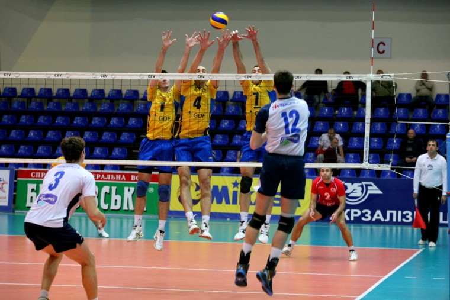

Прийом м'яча
Прийом у волейболі є однією з найважливіших технічних навичок, яка визначає успішність гри команди. Прийом використовується для того, щоб ефективно обробити м'яч після подачі суперника і підготувати його для наступного удару. Це фундаментальний елемент, який вимагає високого рівня технічної підготовки, координації і концентрації.
Дізнатися більше...Основні принципи прийому
- Позиція тіла: гравець повинен стояти на напівзігнутих ногах, злегка нахиленим уперед. Вага тіла розподілена рівномірно, стопи на ширині плечей.
- Руки: руки повинні бути витягнуті вперед і складені разом. Долоні можуть бути з'єднані різними способами, найчастіше використовується "замок" або складання долонь одна на одну.
- Контакт з м'ячем: м'яч приймається на передпліччя, у районі зап'ястків. Контакт з м'ячем повинен бути м'яким і контрольованим.
- Рух: після контакту з м'ячем гравець повинен використовувати ноги і корпус для спрямування м'яча до розігруючого (сетра).

Прийом м'яча зверху
Прийом м'яча зверху (або верхній прийом) є однією з ключових технік у волейболі, яка використовується для обробки м'яча під час гри. Цей прийом дозволяє гравцям ефективно контролювати м'яч і передавати його партнеру по команді для подальшої атаки
Дізнатися більше...